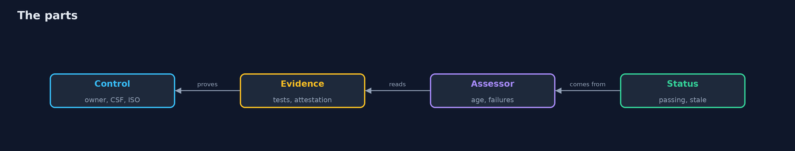
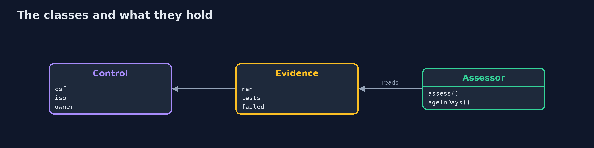
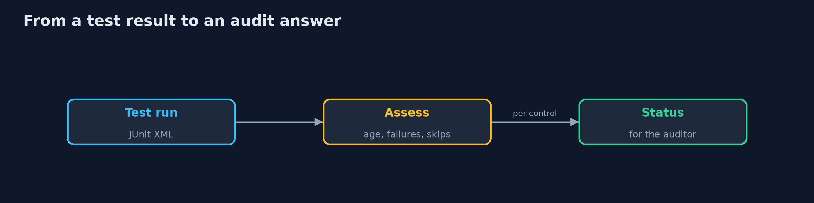
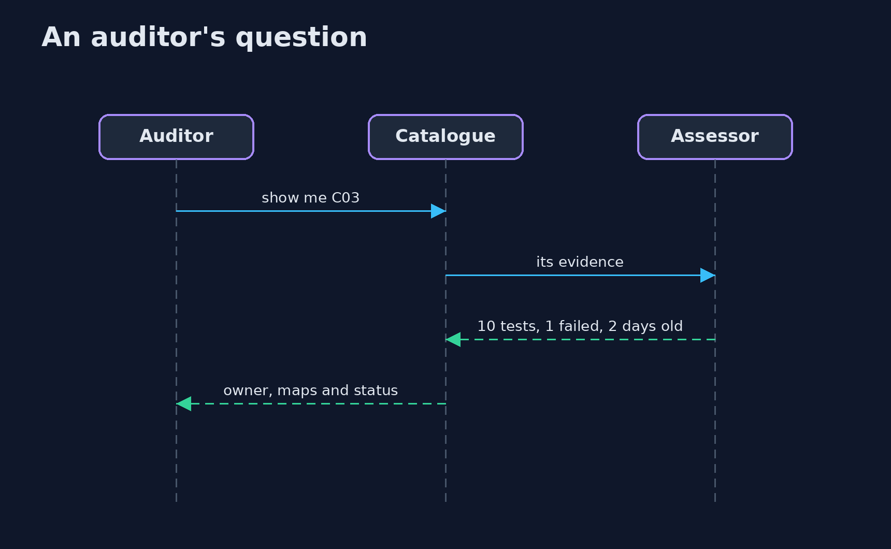

Controls and Evidence
src/main/java/com/jk/explore/security/controlsevidence/
├── Assessor.java Decides what the evidence of a control says on a given day
├── Control.java A control of the bank: who owns it, which NIST CSF 2.0 subcategory and ISO/IEC 27001 Annex A controls it serves, and where its evidence is
├── ControlsAndEvidenceDemo.java
└── Evidence.java The result of a test run, read from a JUnit XML file: when it ran, how many tests, which failed
A bank's 12 controls, each with an owner, are mapped to the 6 functions of NIST CSF 2.0 and to 13 of the 14 ISO 27001 Annex A controls it has chosen (A.8.28 is not served); evidence is read from JUnit test results and from attestations: today 4 of 12 controls have fresh passing test evidence, 1 is failing, 1 partial (skipped tests), 2 stale (one 144 days old against a limit of 90) and 1 has no evidence at all; one failing test turns a passing control failing and leaves 1 of 5 Protect controls with passing evidence instead of 2.
An audit asks two questions about every control: is it mapped to what we promised, and can you show that it works today. This project keeps the bank's 12 controls in a catalogue with an owner and a mapping to NIST CSF 2.0 subcategories and to ISO/IEC 27001:2022 Annex A, reads evidence from JUnit test results (and from signed-off attestations where no test exists), and gives each control a status for the day. It needs only the JDK; ./gradlew test, then ./gradlew run.
What it shows: - The maps. All 6 CSF functions have a control (Protect has 5); 13 of the 14 Annex A controls the bank chose are served, and A.8.28 is not. - The evidence today. 4 of 12 controls have fresh passing test evidence; 1 is failing, 1 is partial because tests were skipped, 2 are stale and 1 has no evidence. - The trail. For one control: the owner, the CSF and ISO references, the test run, its age, and the test that failed. - A test starts to fail. One failing test turns a passing control failing and leaves 1 of 5 Protect controls with passing evidence. - The bill. Evidence shows that a test passed, not that the control is effective.
Maps to: NIST CSF 2.0 Govern (GV.OC, GV.PO) · ISO/IEC 27001:2022 clause 9 and Annex A · SOC 2 CC4.1 monitoring · NIST SP 800-53 CA-2, CA-7.
The idea in everyday terms
A restaurant's food-safety binder. The chef says the fridge is cold. The inspector wants the temperature log, with today's date, signed by whoever read the thermometer. A binder that is a year old, or that has a gap in it, is worth less than a thermometer that reports every hour.
The scenario
A bank is preparing for an audit. It has twelve controls, a statement of applicability with fourteen Annex A controls, and test results from the build. The demo says which controls it can prove today.
Run
./gradlew run
The demo tells the story in 5 acts, each printing exact numbers that the tests check:
| Act | What it shows |
|---|---|
| 1. The catalogue and its maps | 12 controls reach all 6 CSF functions and 13 of the 14 chosen Annex A controls. |
| 2. What the evidence says today | 4 of 12 controls have fresh passing test evidence; the rest are failing, partial, stale, attested or missing. |
| 3. The trail for one control | From the control to the test run that failed, with its age and its owner. |
| 4. When a test starts to fail | One failing test turns a passing control failing and leaves 1 of 5 Protect controls with passing evidence. |
| 5. The bill | Evidence shows a test passed, not that the control works; attestations prove less and age slowly. |
Test
./gradlew test
10 tests in AssessorTest, DemoRunsTest. The assessor, the parsing of test reports and the catalogue are tested with the JDK only. The demo is compared with its golden output.
What the simulation got right, and what it left out
The catalogue and the test results are small fixtures that look like the real thing; the dates are fixed so that every run gives the same output. The mappings use real NIST CSF 2.0 and ISO 27001:2022 identifiers.
Technologies and versions
Every version below is pinned in the project's build files and was the latest stable release when the project was built.
| Technology | Version | Used for |
|---|---|---|
| Java | 25 | the language and runtime; a Gradle toolchain finds or downloads the JDK |
| Gradle | 9.8.1 (wrapper) | build and run; nothing to install, the wrapper downloads it |
| org.junit.jupiter:junit-jupiter | 6.1.3, set by junit-bom | JUnit 5: the tests (tests only) |
| org.junit.platform:junit-platform-launcher | 6.1.3, set by junit-bom | JUnit platform launcher, which Gradle needs to run the tests (tests only) |
| videokit | repository tool (tools/videokit) |
the narrated video and animation: Piper en_US-amy-medium, speed 0.8, longer pauses (the amy-slow voice) |
Learning Material
| Document | What it is for |
|---|---|
| Problem statement | the situation and what the project must show |
| Prerequisites | what you need to know first |
| Controls and Evidence, explained | the acts in prose |
| Session guide | a one-hour lesson with exercises |
| Animated walkthrough | the acts step by step, narrated |
| Threat model | what is protected, who could harm it, and how, using STRIDE |
| Spec | what this project must be true of |
| Expected output | the golden demo output every test and every port checks against |
The idea in one picture
A control is proved by evidence with a date.

Where each piece sits
A control, its evidence and the verdict.

How the data moves
Status follows the tests.

Who calls whom, in order

Video
video/controls-and-evidence-explained.mp4 (with .m4a audio and .srt subtitles) is built by video/build_video.sh. Rendered media is not committed.
What it costs
- Evidence has to be kept fresh, or it turns stale in a quarter.
- A mapping is a claim, and nobody checks the claim without a review.
- Tests can be weak, and a green test proves little.
- Attestations are cheap to give and hard to check.
- A catalogue needs owners who answer.
When this is too much
A small team with one auditor and a handful of controls can use a spreadsheet. Automate evidence when the same questions come every quarter, or when several frameworks ask about the same controls.
Where you have already met this
- A spreadsheet of controls updated before the audit.
- A screenshot as evidence.
- A control that serves three standards and has three owners.
- A statement of applicability nobody has read since it was signed.
Where this sits
This is a project of the governance-risk-and-compliance module, after risk-management, which prices the controls that this project tracks.